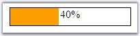
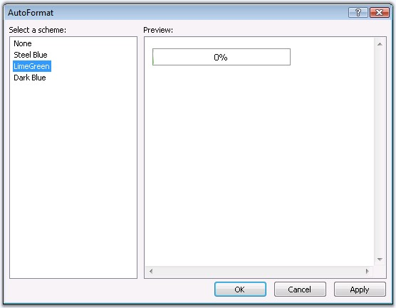
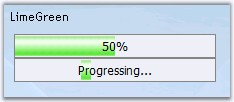

This section discusses the various pre-defined skin support and the css styles in the following topics.
Stylesheets can be set for the control to customize the look and feel by defining the styles and setting the class names to the css properties. The various style properties are as follows.
|
Property |
Description |
|
BackgroundCss |
Specifies the class name of the css definition for the background. |
|
ProgressCss |
Specifies the css definitions to apply on the control. |

Figure 430:
1. Add a stylesheet to the application and add the required styles to be applied to various segments of the editor control.
|
[StyleSheet]
.style { background-color:Blue; } .background { border:solid 1px Blue; } |
2. The style reference tag should be added to within the head tags.
|
<link href="StyleSheet.css" type="text/css" rel="stylesheet" /> |
3. The style definition's class name must be set to the ProgressCss property and the BackgroundCss properties.
|
[aspx]
<cc1:ProgressBar ID="ProgressBar1" runat="server" Height="26px" ProgressStyle="RegularMode" ProgressCss="style"/> |
See Also
The ProgressBar provides pre-defined set of styles that can be applied to your control just on a click of the button. You can set the desired look and feel for the control that includes some popular styles too.
Right clicking the control and selecting the Auto Format... option opens the following Auto Format dialog box.

The left pane lists the various pre-defined style scheme that are available. The right pane shows the preview of the currently selected scheme. Select the required style, and then click OK to apply the selected scheme to the control.
Example of a pre-defined look and feel
The following image shows the ProgressBar with Steel Blue style setting.
